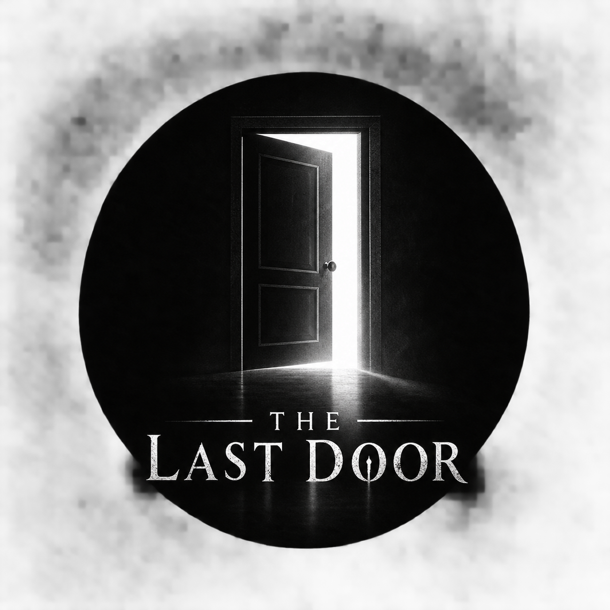

SECURE GATE // ONLINE
ENTRY PROTOCOL 07.01

Restricted access
Think beyond
the obvious.
Seventy difficult challenges stand between you and the exit. Questions and answer positions are shuffled for every attempt. A wrong answer keeps the current lock closed.
70 challenges
Advanced difficulty
No skips
Random sequence
No hints. No second route. Think carefully.